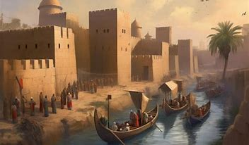
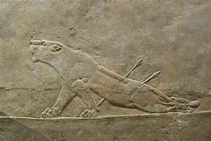

.png)
LA CULTURA DEL IMPERIO ASIRIO
Los Asirios fueron una civilización con una cultura rica y compleja, influenciada por su entorno geográfico y sus conquistas. Su sociedad estaba fuertemente jerarquizada y su arte, religión y costumbres reflejaban su poderío y visión del mundo
| Clase Social | Descripción |
|---|---|
| El Rey | Máxima autoridad, gobernaba en nombre del dios Assur y dirigía el ejército. |
| Nobleza y Sacerdotes | Administraban el reino, los templos y mantenían el orden religioso. |
| Guerreros y Funcionarios | Militares entrenados para la expansión y administración del imperio. |
| Comerciantes y Artesanos | Sustentaban la economía con comercio, textiles, metalurgia y cerámica. |
| Campesinos | Cultivaban tierras, producían alimentos y pagaban tributos al gobierno. |
| Esclavos | Trabajaban en construcción, minería y servidumbre, obtenidos de campañas militares. |
Arte y Arquitectura
Los Asirios fueron grandes constructores y artistas:- Relieves en piedra: Representaban escenas de guerra, caza y ceremonias religiosas.
- Palacios monumentales: Como el de Sargón II en Dur-Sharrukin y el de Asurbanipal en Nínive.
- Estatuas protectoras: Como los Lamassu, figuras de toros alados con cabeza humana.
Religión y Creencias
La religión asiria era politeísta, con dioses poderosos: - Assur: Dios supremo, protector del imperio.- Ishtar: Diosa del amor y la guerra.
- Adad: Dios de las tormentas y la fertilidad.
- Marduk: Adoptado de Babilonia, símbolo de poder.
🍽 Costumbres y Vida Diaria
- Vestimenta: Usaban túnicas largas con bordados detallados.- Alimentación: Basada en cereales, carne, pescado y frutas.
- Escritura: Usaban la escritura cuneiforme en tablillas de arcilla.
- Celebraciones: Festivales religiosos y ceremonias militares.  